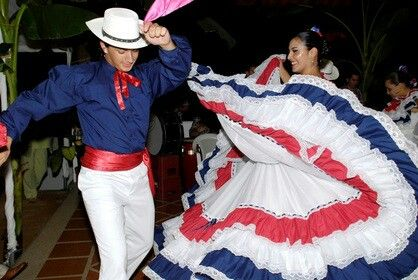
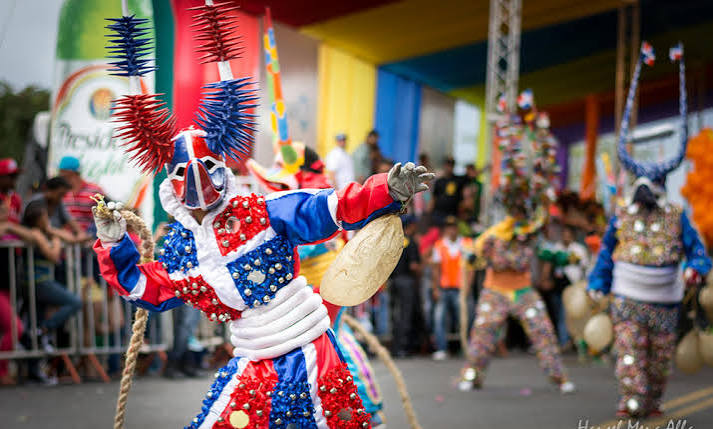
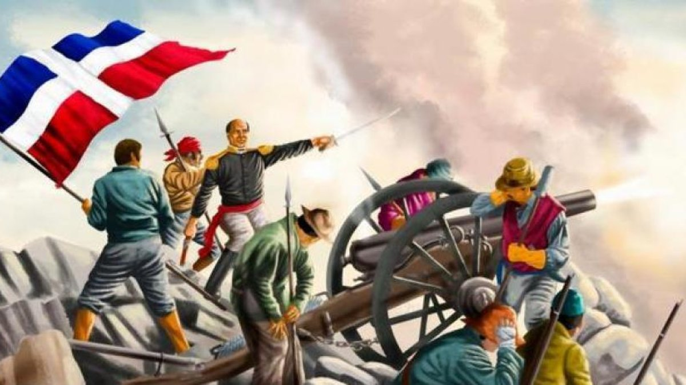

Music & Dance
Dominican music and dance are an integral part of the culture, with genres like merengue and bachata being widely celebrated.
Explore the rich culture, music, and traditions of the Dominican Republic.
The Dominican Republic is known for its rich culture, vibrant music, and traditional festivals.

Dominican music and dance are an integral part of the culture, with genres like merengue and bachata being widely celebrated.

The Dominican Republic hosts various festivals and traditions that reflect the country's rich cultural heritage, including the Carnival of Santo Domingo and the Festival of the Black Christ.

The Dominican Republic has a rich history influenced by indigenous, African, and European cultures, which has shaped its unique cultural identity.